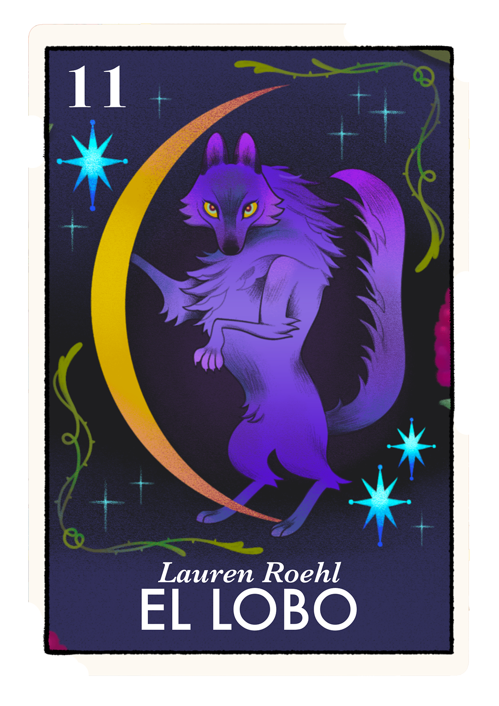
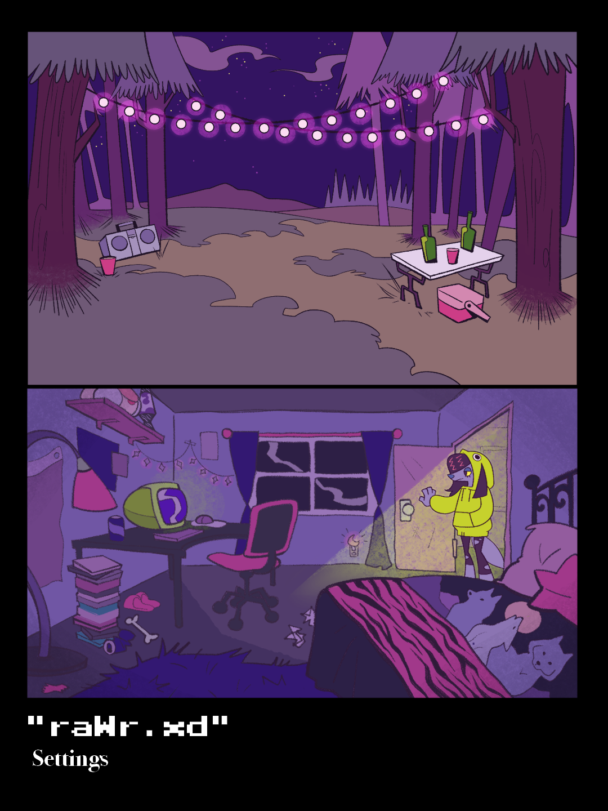
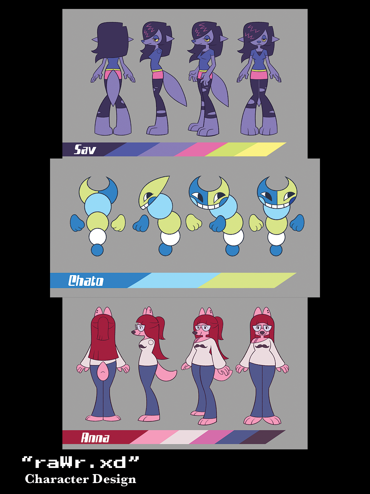
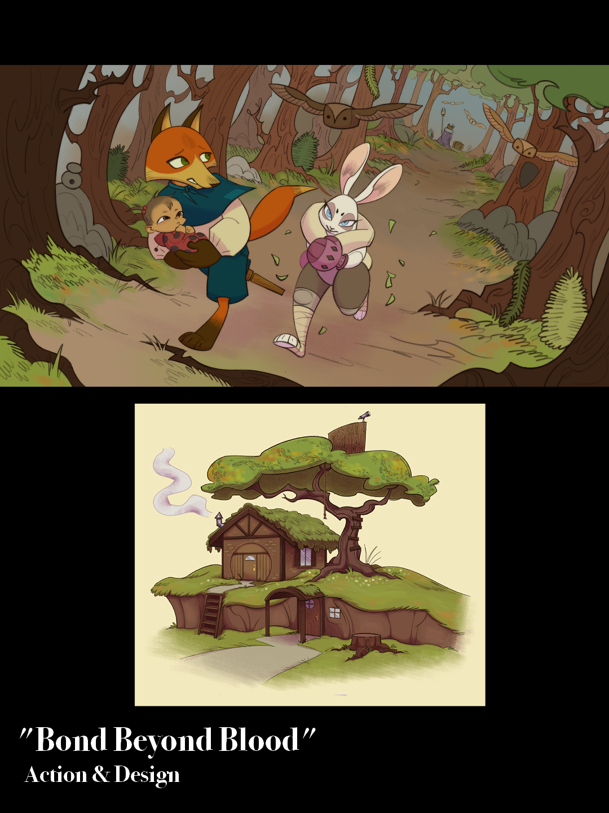
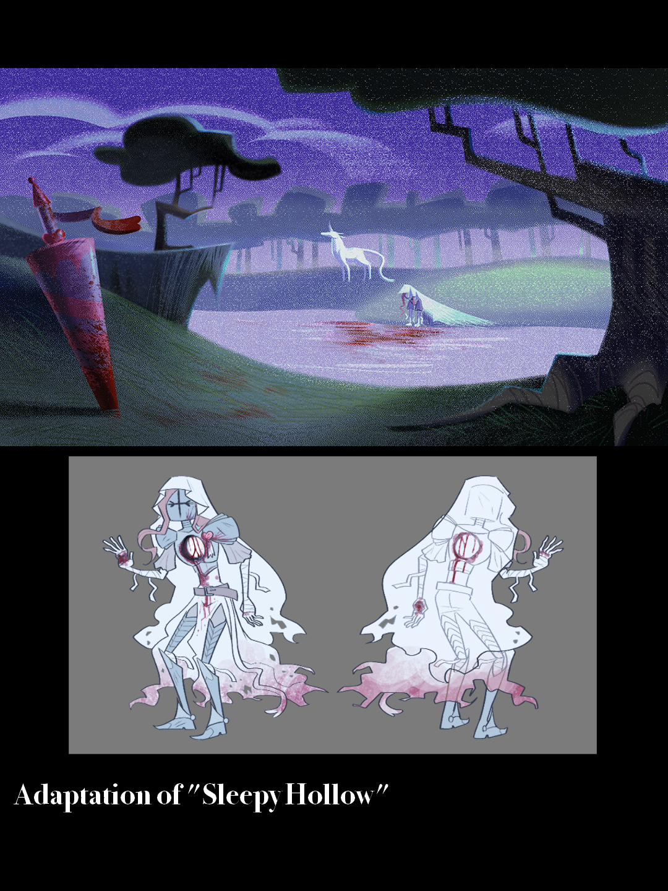

Lauren Roehl - El Lobo
Hello everypony, I’m Lauren! :3 I am a 2D artist with a love for animals (especially wolves), silly shapes, and rich colors in my artwork. I primarily focus on 2D animation, character acting, and compositing! I am a HUGE old internet nerd, and this nostalgic adoration for amateur, self-indulgent digital art has pushed me to pursue a career in animation! While college has been fun, I'm ready for new beginnings and room to stretch my wings. AWOOOOO 🥂🐺



